Explore Hannover
A Brief History
Hannover became the capital of the Electorate and later Kingdom of Hanover, linking the British crown through the personal union under George I from 1714. Baroque Herrenhausen Gardens and the rebuilt city centre reflect princely patronage and post-war reconstruction. The city hosted Expo 2000 and remains a major trade-fair centre, while red-brick churches and the Neues Rathaus define the skyline.
Attractions Map
Top Sights & Activities
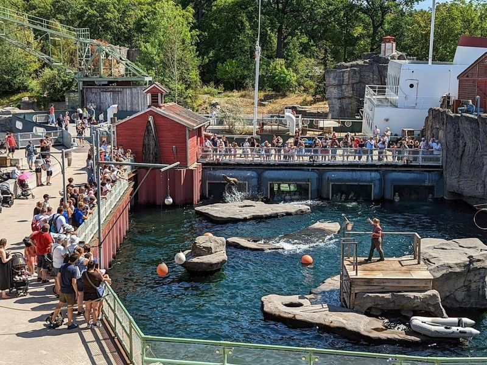
Erlebnis-Zoo Hannover
Erlebnis-Zoo Hannover in the city forest combines a zoo and adventure park with themed worlds from Yukon Bay to Meyer's Farm. Founded in 1865, it was one of Germany's first public zoos. Expansions added rainforest halls and Canadian wildlife exhibits alongside classic primate and big-cat enclosures.
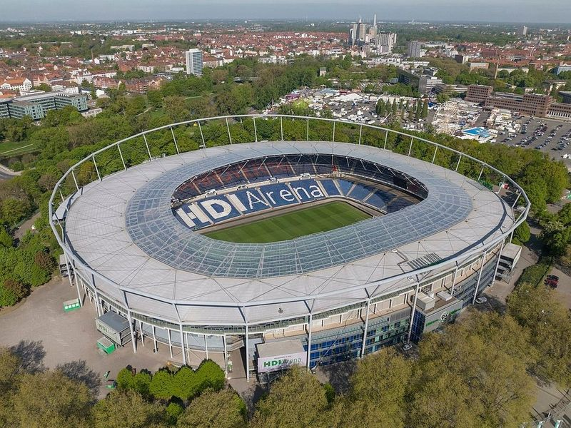
Heinz von Heiden-Arena
The Heinz von Heiden-Arena is the home stadium of Hannover 96 on the banks of the Maschsee, seating about 49,000 spectators. Opened in 1954 and rebuilt for the 2006 World Cup, it hosts Bundesliga football and occasional concerts. Stadium tours visit the stands, VIP areas, and players' tunnel on selected match-free days.
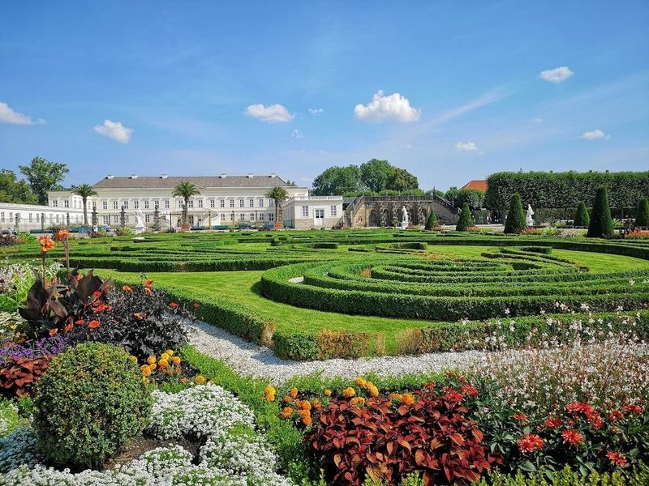
Herrenhäuser Gärten
The Herrenhäuser Gärten comprise the Great Garden, Berggarten, and Georgengarten linked to the Welf dynasty's summer palace. The Great Garden's baroque parterres and grotto by Niki de Saint Phalle rank among Northern Europe's major formal gardens. The Berggarten holds historic greenhouses and orchid collections.
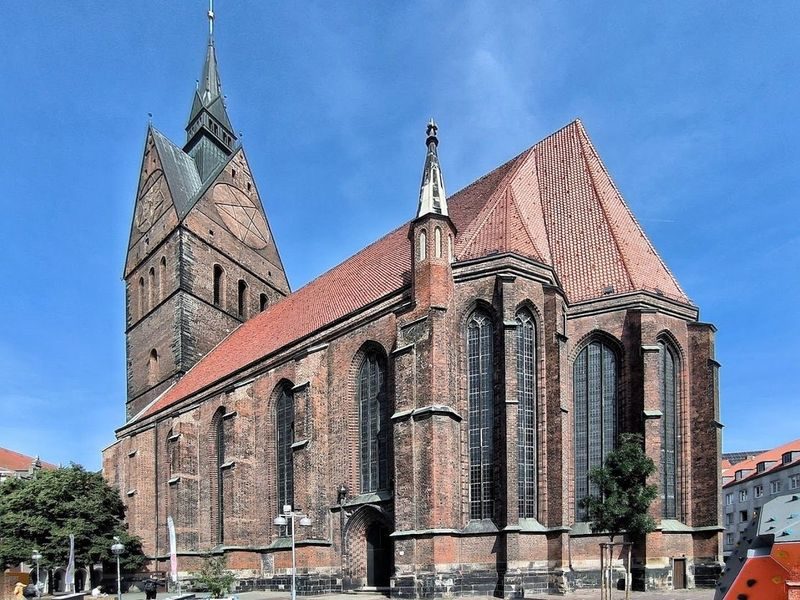
Marktkirche Hannover
The Marktkirche St. Georgii et Jacobi is a north German brick Gothic hall church on the old town market square, begun in the 14th century. Its tower and nave survived wartime bombing that levelled much of the Altstadt. The church remains the main Lutheran parish church of the city centre.
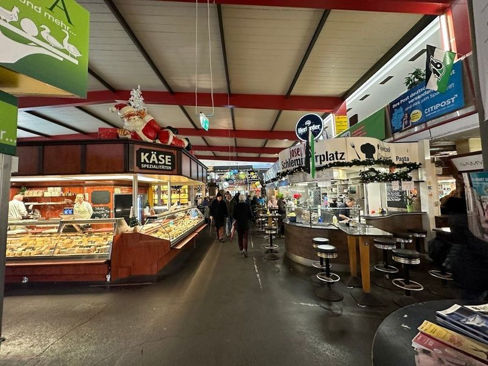
Markthalle Hannover
The Markthalle Hannover is a red-brick market hall from 1891 with cast-iron columns and a glass roof over food stalls and delicatessens. Vendors sell regional produce, spices, and prepared meals beneath the vaulted ceilings. The hall anchors the Linden-Nord quarter north of the city centre.
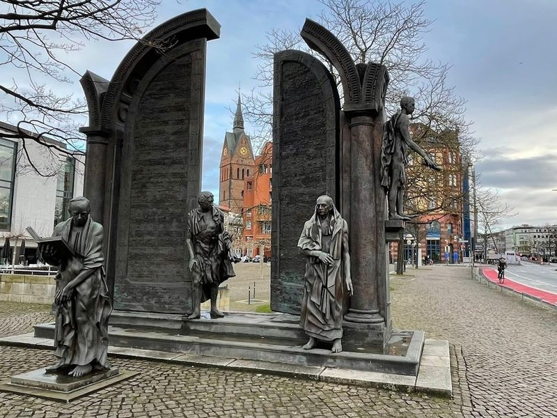
Göttingen Seven Monument
The monument to the Göttingen Seven on Platz der Göttinger Sieben honours seven professors who protested against the annulment of Hanover's constitution in 1837. Ernst August I dismissed them from the university, turning the affair into a symbol of academic freedom. The bronze group stands before the Leibnizhaus on Holzmarkt.
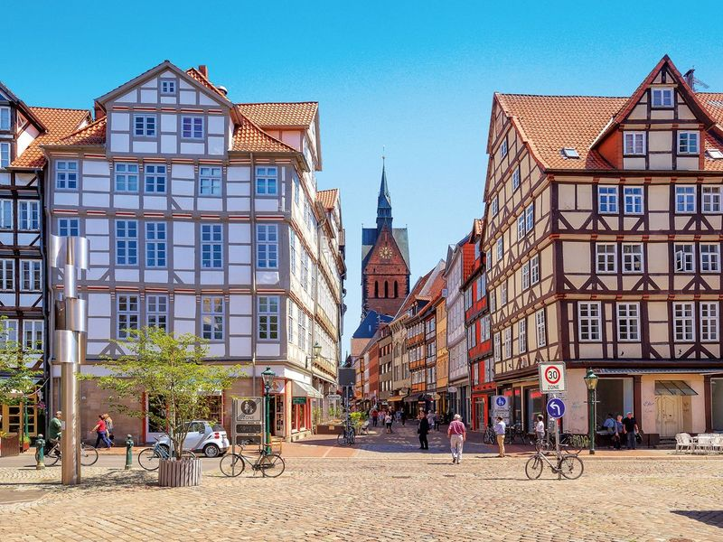
Hannover Altstadt
Hannover's Altstadt clusters half-timbered lanes such as Kramerstrasse and Burgstrasse around the Marktkirche, rebuilt after wartime destruction. The 15th-century Old Town Hall with its stepped gable faces the market square. Craft shops and taverns occupy restored merchant houses along cobbled streets.
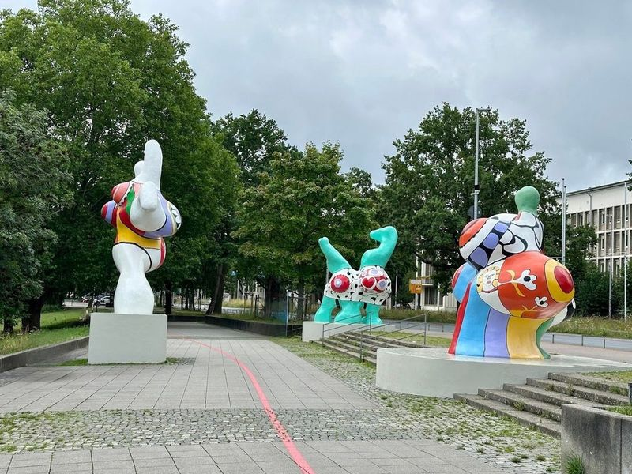
Niki de Saint Phalle - NANAS
The Nanas are colourful polyester sculptures by Niki de Saint Phalle installed along the Leibnizufer from 1974. The exuberant female figures beside the Maschsee were controversial at first but became emblematic of Hannover's public art programme. More of her work appears in the grotto at Herrenhausen.
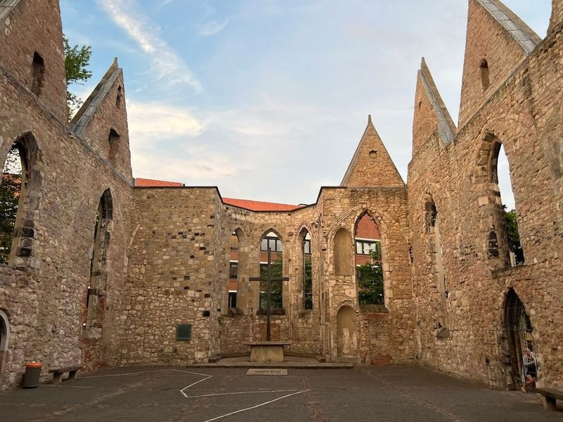
Aegidien Church War Memorial
The Aegidienkirche is a ruined medieval church left as a war memorial after 1943 bombing, with open walls framing the sky. A peace bell from Hiroshima hangs in the roofless nave. The church was founded in the 14th century and once served as a city gate chapel.
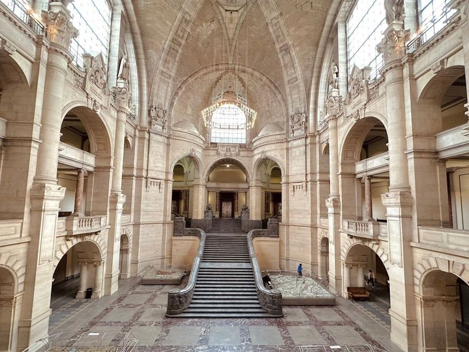
New Town Hall
The Neues Rathaus on the Maschsee was completed in 1913 in eclectic style with a domed tower rising nearly 100 metres. A unique arched lift ascends the dome at a 17-degree angle to an observation platform. Model displays inside illustrate Hannover's districts and history.
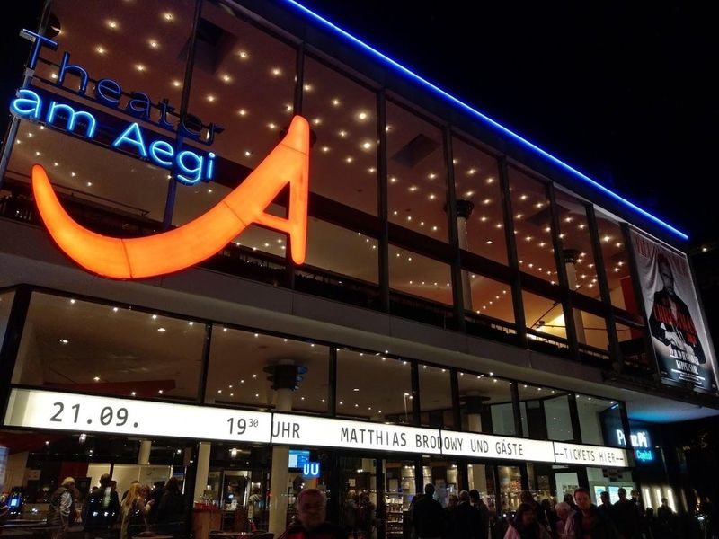
Theater am Aegi
The Theater am Aegi on Aegidientorplatz is a multipurpose venue for concerts, comedy, and touring musicals since the 1950s. The modern hall seats about 1,300 beneath a distinctive folded roof. It stands beside the Aegidienkirche war memorial in the inner city.
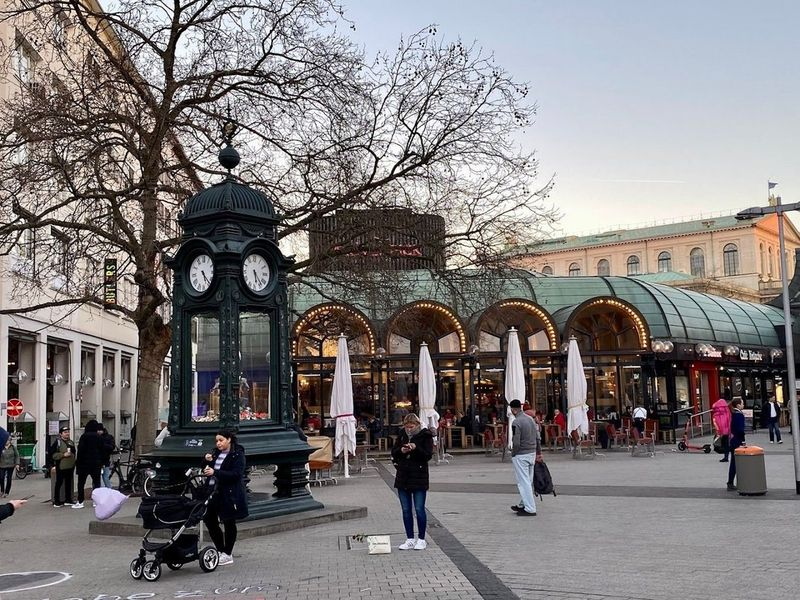
Kröpcke Clock
The Kröpcke clock is a meeting-point pavilion on Hannover's central square, named for a 19th-century café owner. The current art-nouveau kiosk dates from 1977 and marks the junction of pedestrian shopping streets. Underground U-Bahn lines connect here beneath the Bahnhofstrasse.
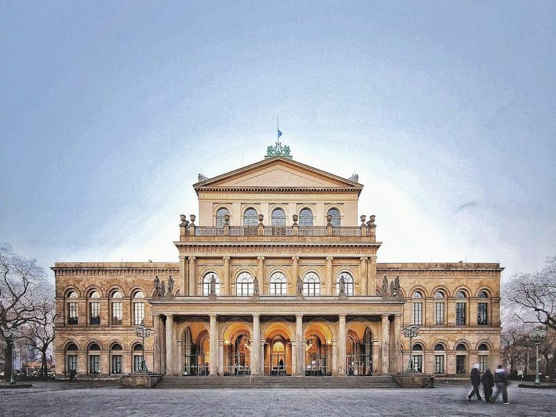
State Opera of Hannover
The Staatsoper Hannover on Opernplatz is the state opera house of Lower Saxony, housed in a classical building from 1852 rebuilt after the war. The company performs opera, ballet, and concerts in a 1,200-seat auditorium. The square fronts the Hannover Congress Centrum complex.
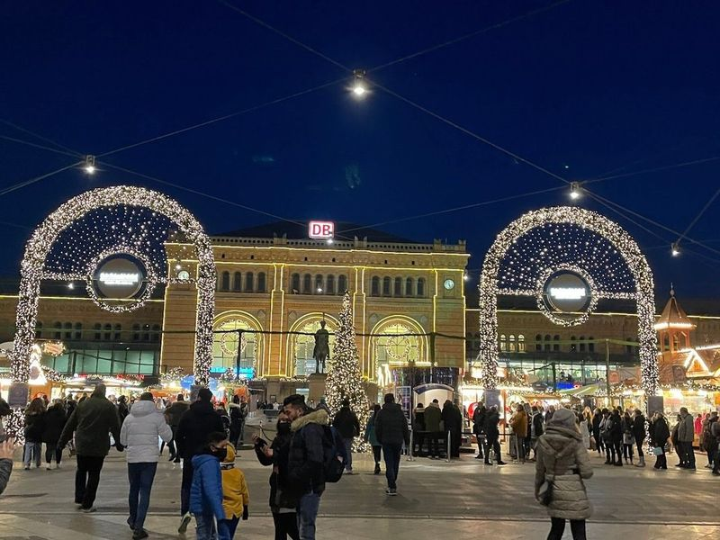
Ernst August
The Ernst-August-Denkmal is a bronze equestrian statue of King Ernst August I on Ernst-August-Platz before the main railway station. Unveiled in 1865, it honours the monarch who introduced the constitution disputed by the Göttingen Seven. Locals traditionally touch the horse's raised hoof for luck.
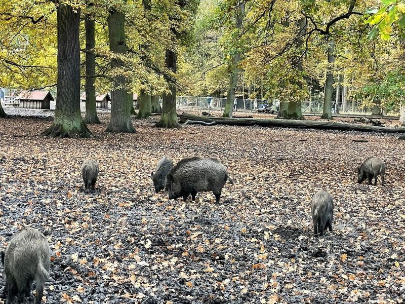
Hannover Tiergarten
The Hannover Tiergarten is a 112-hectare forest park north of the city centre with marked trails, ponds, and fenced enclosures for fallow deer and wild boar. Established as a ducal hunting ground, it offers shaded walks without admission gates. The Erlebnis-Zoo adjoins the southern edge.
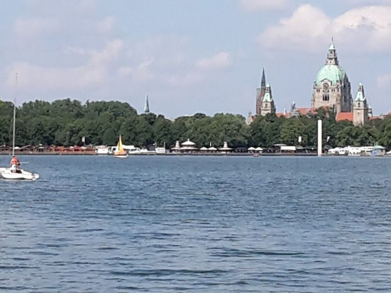
Maschsee
The Maschsee is an artificial lake excavated between 1934 and 1936 south of the city centre for unemployment relief. A 6-kilometre path circles the water, linking the Neues Rathaus, rowing clubs, and festival grounds. The Maschseefest draws crowds each summer.